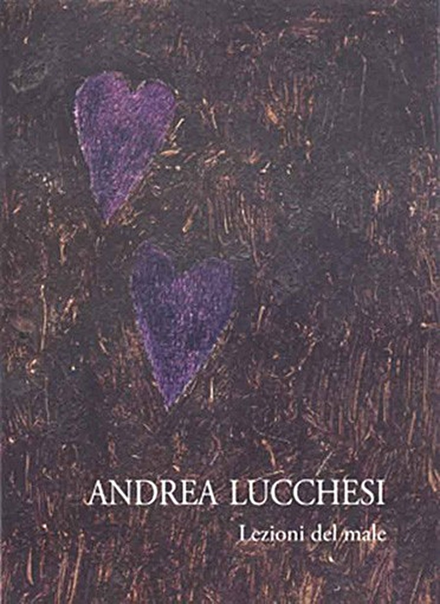

Lezioni del Male

La Sala delle Esposizioni dell'Accademia delle Arti del Disegno, in collaborazione con la galleria Blob ART arte contemporanea di Livorno inaugura venerdì 5 giugno una mostra personale del giovane e promettente artista toscano Andrea Lucchesi (1981), Lezioni del male, a cura di Francesca Baboni e Stefano Taddei. Vincitore del prestigioso premio intitolato alla memoria del pittore Tito Conti, che gli ha permesso di occupare lo studio storico del pittore per cinque anni, ora il giovane artista, formatosi sotto la guida di Adriano Bimbi, espone un'antologica delle serie realizzate in questi cinque anni di lavoro in piazza Donatello, nel cuore di Firenze. Tra ritratti di uomini, animali domestici e paesaggi metafisici, le sue lezioni del male raccontano un'umanità diversa, quella degli ultimi, gli emarginati, i reietti della società che attraverso la pittura trovano una loro dignità sacrale. Le loro lezioni del male sono dunque lezioni di vita vera, di un male che si fa scelta di un percorso preciso, non certo negativo. Scrivono i curatori:
E' la poetica dei vinti di verghiana memoria, che hanno perso battaglie ma sanno sempre rialzarsi e trovare la forza per non soccombere, sono quegli ultimi in cerca di riscatto che nelle opere di Lucchesi sono i primi in dignità e verso i quali il pittore sente un grande senso di appartenenza. E li ritrae così, fieri nelle loro pose, fermati e fissati nella visione come appunto antiche icone sacre, immobili come santi del quotidiano, antieroi dalla grande forza interiore che assumono volutamente e spontaneamente forma sacrale incutendo una certa soggezione, nel loro dignitoso ergersi sulla tela.